Visita de misioneros · Instituto MISION
Piezas para Facebook, Instagram y el proyector. Nada está publicado: esperan tu ok.
1 · Reel (Instagram y Facebook) · 9:16 · 36 s
Con «Toda lengua y toda nación». El cuadro inicial ya muestra fecha, hora y lugar; cada noche tiene su cronograma.
2 · Video horizontal para Facebook · 16:9 · 51 s
3 · Loop para el proyector · 16:9 · 72 s · sin audio
El último cuadro coincide con el primero: se puede repetir sin salto.
4 · Facebook · 5 imágenes que se ven como una
Subirlas juntas y en este orden (1 a 5). Facebook arma 2 arriba + 3 abajo. Cada imagen también se entiende sola.
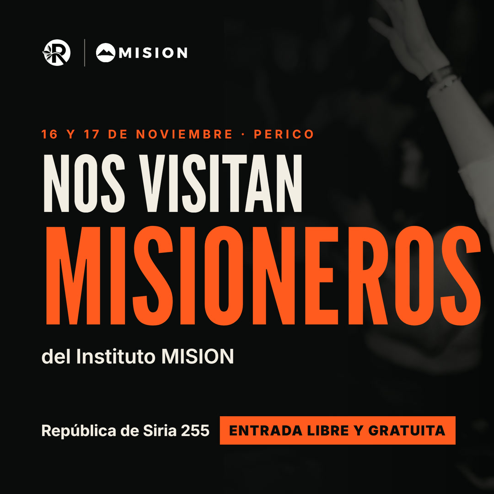
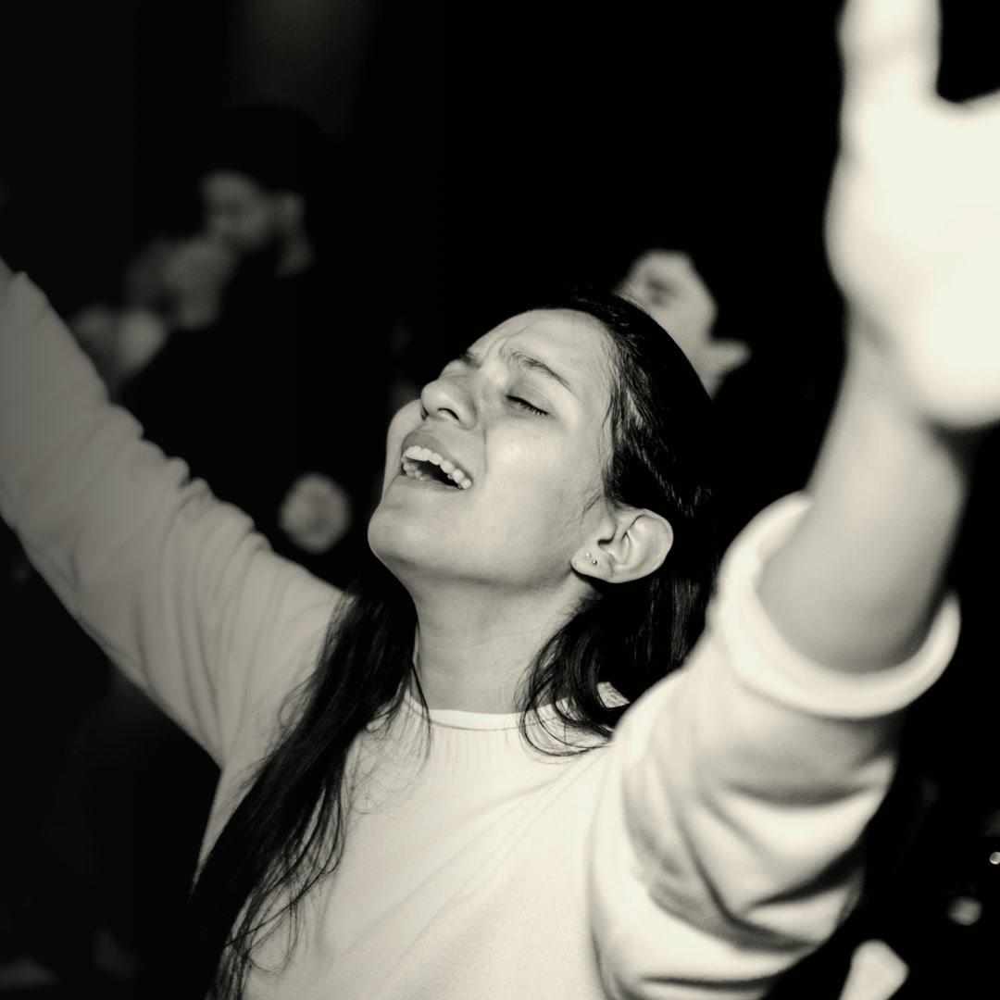
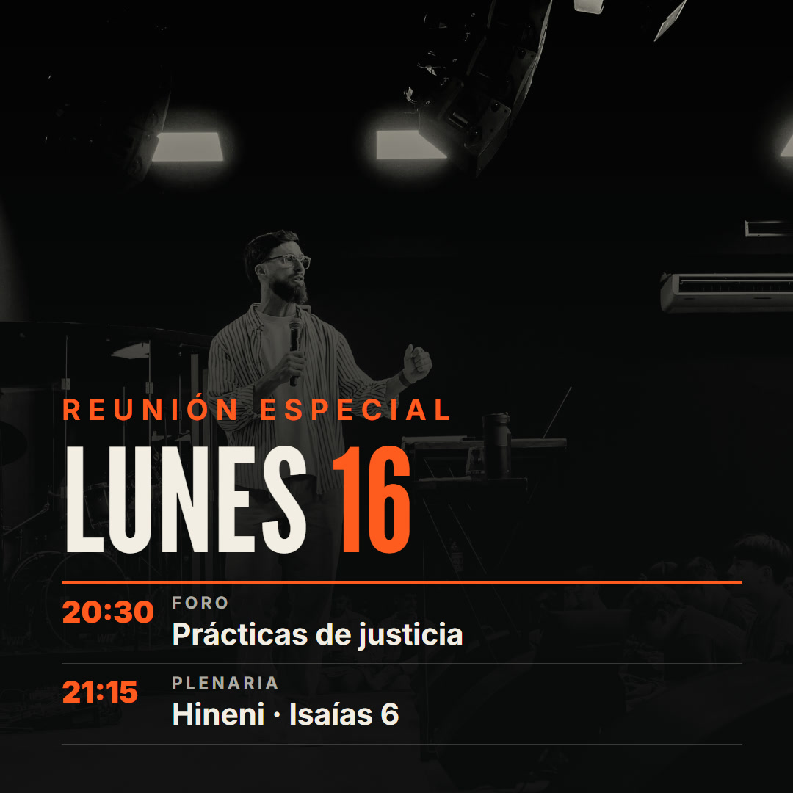
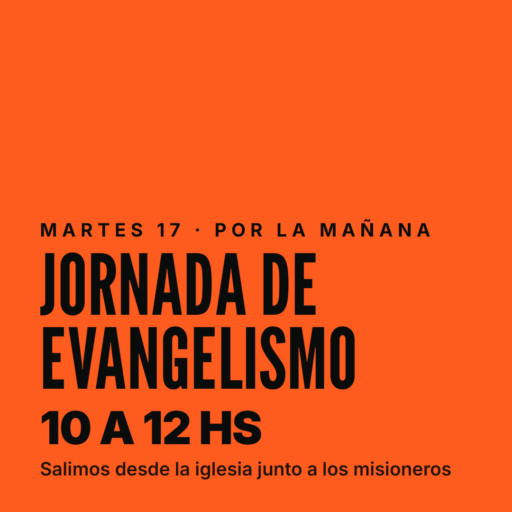
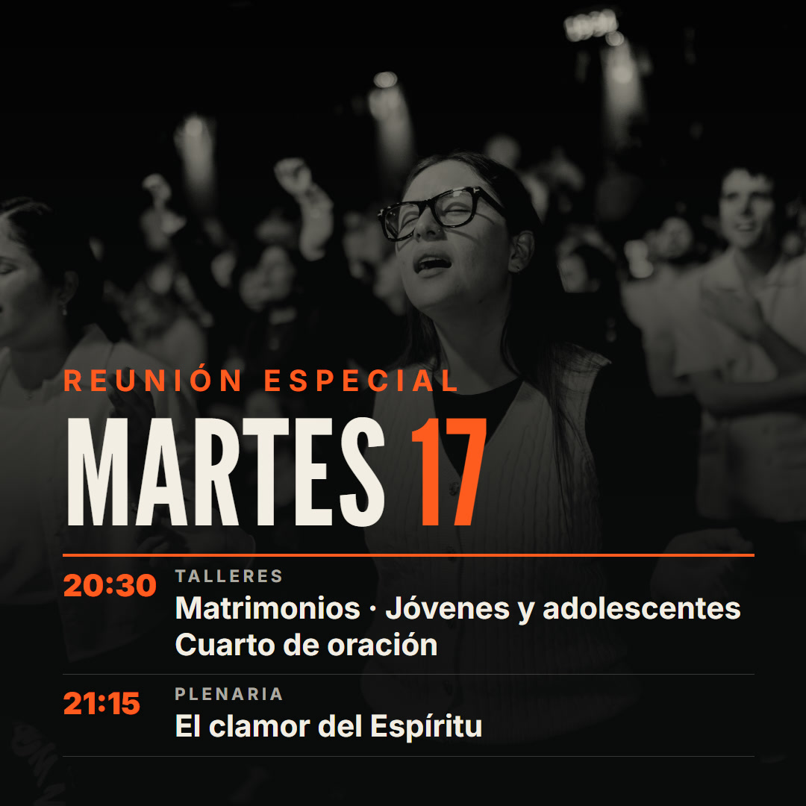
5 · Instagram · carrusel de 5 slides (4:5)
La línea naranja corre de un slide al siguiente y la foto de portada se asoma en el 2: invita a deslizar.
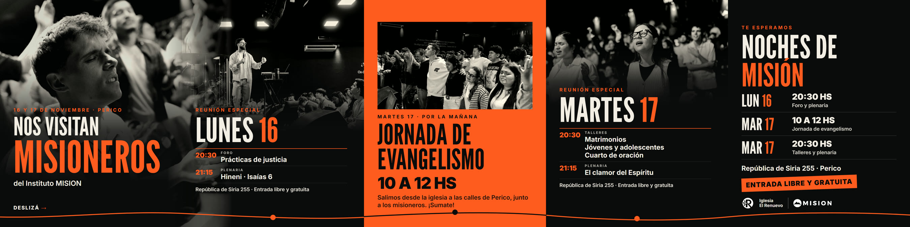
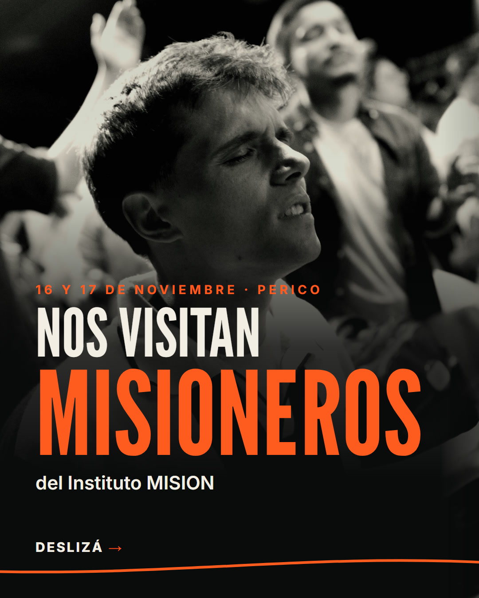
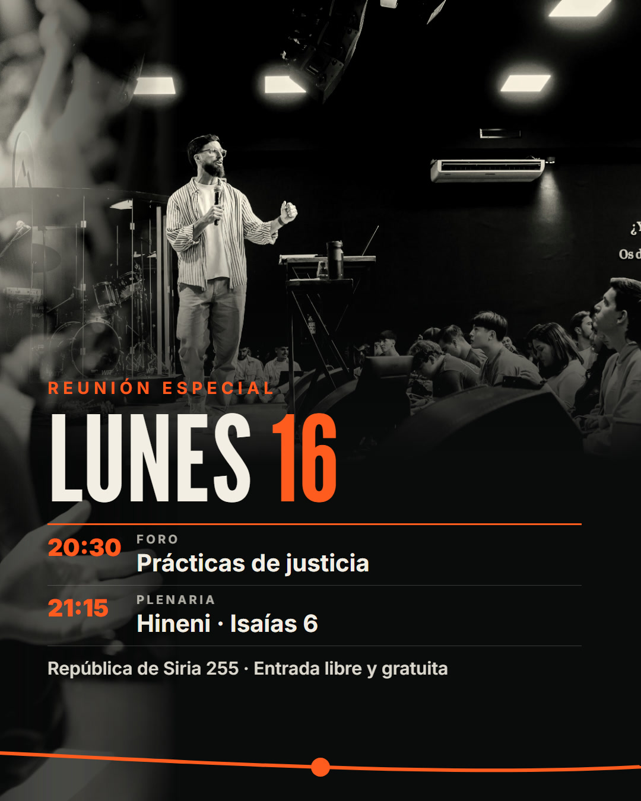
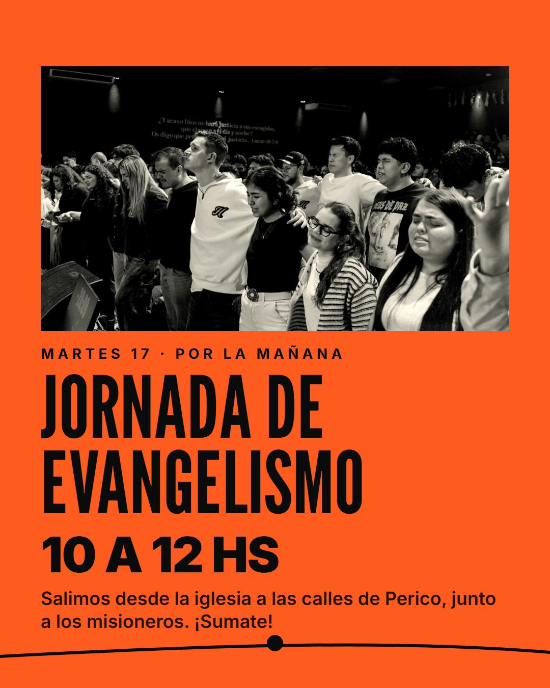
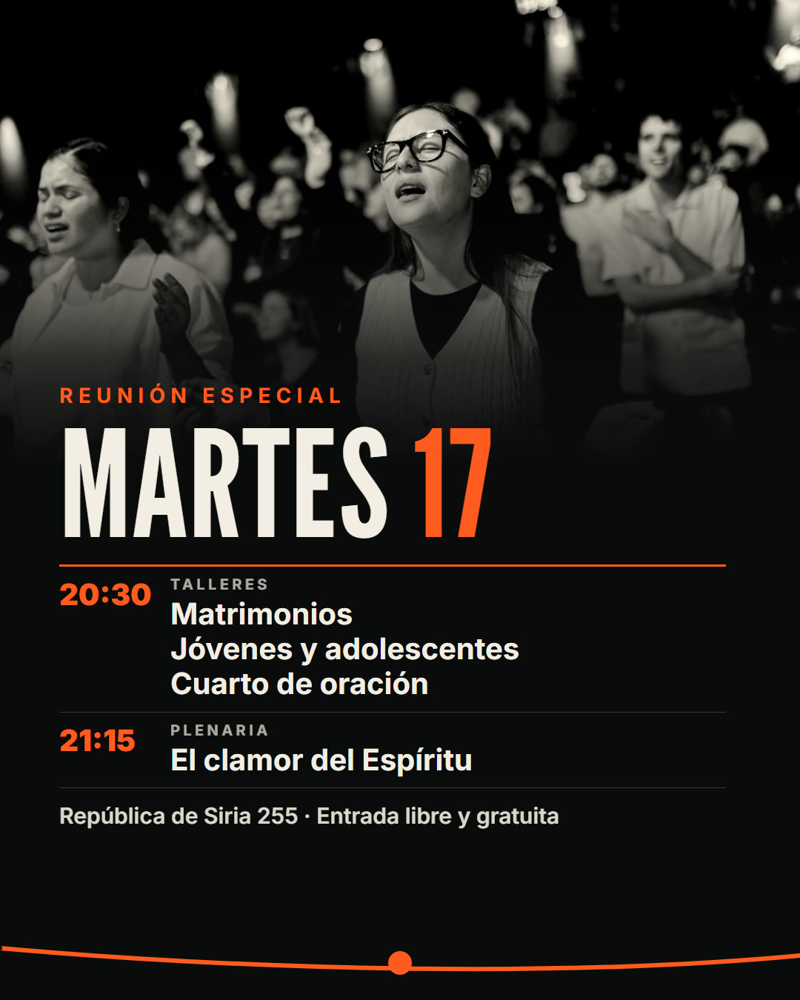
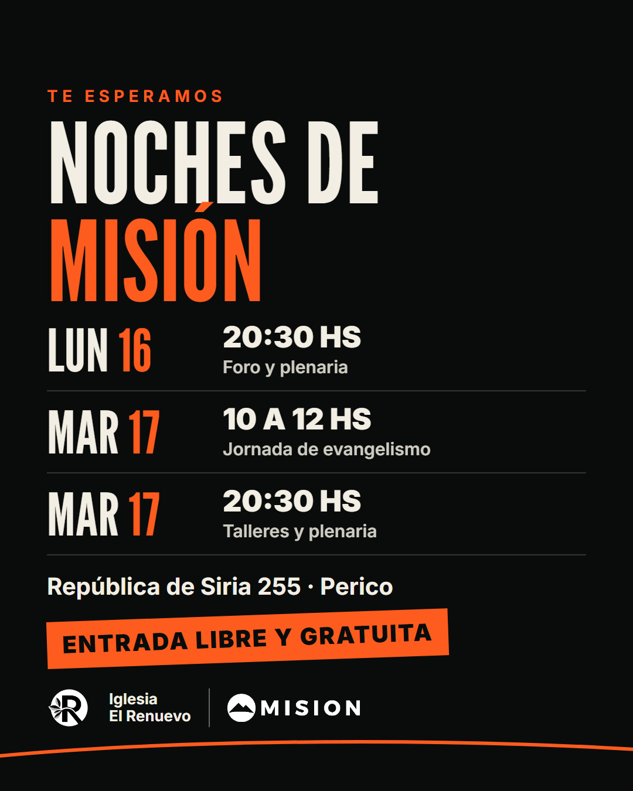
6 · Copys
Con la guía de voz: voseo, 60 palabras como máximo y los datos en renglones.
Post (mosaico de Facebook y carrusel de Instagram)
✨ Nos visitan misioneros del Instituto MISION ✨ Dos noches para escuchar lo que Dios está haciendo en otros lugares y renovar juntos el llamado a llevar el evangelio. Foro, talleres y plenarias, sin ningún costo. 📅 Lunes 16 y martes 17 de noviembre 🕗 20:30 hs 📍 República de Siria 255, Perico El martes, de 10 a 12, salimos a evangelizar. ¡Sumate! #ElRenuevo #Perico #Jujuy #InstitutoMision
Reel y video horizontal
Lunes 16 y martes 17, 20:30 hs 🌎 Nos visitan misioneros del Instituto MISION. Foro, talleres y plenarias, con entrada libre y gratuita. 📍 República de Siria 255, Perico ¡Vení e invitá a alguien! #ElRenuevo #Perico #Jujuy #InstitutoMision